A digital camera does not store a picture. It stores a list of measurements, one for each tiny square of the sensor, saying how much light landed there. The “picture” only appears when a screen turns those numbers back into light. In this chapter we take that idea literally: we will build images out of arrays by hand, take real photographs apart into their arrays, and change them with nothing but the NumPy operations from Chapter 6.
A picture made of numbers
Here is an image typed in by hand. Each number is a pixel (“picture element”): 0 is black, 255 is white, and values in between are shades of gray.
import numpy as np
import matplotlib.pyplot as plt
face = np.array([
[0, 0, 0, 0, 0, 0, 0, 0],
[0, 0, 255, 0, 0, 255, 0, 0],
[0, 0, 255, 0, 0, 255, 0, 0],
[0, 0, 0, 0, 0, 0, 0, 0],
[0, 255, 0, 0, 0, 0, 255, 0],
[0, 0, 255, 255, 255, 255, 0, 0],
[0, 0, 0, 0, 0, 0, 0, 0],
], dtype=np.uint8)
print(face.shape, face.dtype)
plt.figure(figsize=(2, 1.8))
plt.imshow(face, cmap='gray')
plt.show()(7, 8) uint8
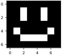
The values run from 0 to 255 because each pixel is stored as one byte, an unsigned 8-bit integer, or uint8. A byte can hold 256 different values, which turns out to be enough shades of gray that your eye can almost never see the steps between them.
Since we will draw a lot of images, let’s wrap the drawing in a small helper. Its size is the width of the drawing in inches, and any extra settings are passed straight on to imshow:
def plot(x, title=None, size=2.6, **kwargs):
plt.figure(figsize=(size, size))
plt.imshow(x, cmap='gray', **kwargs)
plt.axis('off')
if title:
plt.title(title)
plt.show()Because the image is an array, changing the image means doing arithmetic. To make a negative, subtract every pixel from 255 (Figure 7.2).
plot(255 - face, size=1.8)255 - face.Color
A color image needs three numbers per pixel: how much red, green and blue light to mix. NumPy stores this as a three-dimensional array with shape (height, width, 3). The last axis holds the three channels.
pixels = np.array([
# red green blue
[[255, 0, 0], [0, 255, 0], [0, 0, 255]],
# cyan magenta yellow
[[0, 255, 255], [255, 0, 255], [255, 255, 0]],
], dtype=np.uint8)
print(pixels.shape)
plot(pixels, size=2)(2, 3, 3)
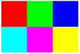
Mixing light is not mixing paint. Red and green light together make yellow, and all three at full strength make white.
A real photograph
Real images come from files. The imread function from scikit-image reads a JPEG or PNG file, or a web URL, and hands back an ordinary NumPy array. To keep everything in this book reproducible, we will use the sample photographs that ship with scikit-image. Here we save one to disk and read it back exactly as you would read your own photo.
import os
from skimage import data
from skimage.io import imread, imsave
os.makedirs('data', exist_ok=True) # a folder for our files
imsave('data/cat.png', data.chelsea()) # save a sample photo...
cat = imread('data/cat.png') # ...and read it back
print(cat.shape, cat.dtype, cat.min(), cat.max())
plot(cat, size=3.4)(300, 451, 3) uint8 0 231
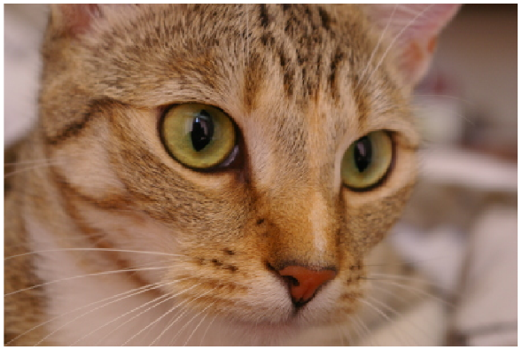
The photograph is 300 pixels tall and 451 wide, with three channels: numbers. A phone camera produces tens of millions. Indexing works exactly as it did for the small arrays in Chapter 6: cat[row, column] is one pixel, a list of three numbers, and a third index picks a single channel.
print(cat[100, 200]) # one pixel: [red, green, blue]
print(cat[100, 200, 0]) # just its red value[76 39 13] 76
Cropping
Cropping is slicing. To cut out a rectangle, give a range of rows and a range of columns:
eye = cat[20:190, 110:290]
print(eye.shape)
plot(eye, size=2.2)(170, 180, 3)
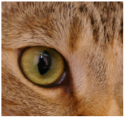
cat[20:190, 110:290]: a crop is just a slice.Remember that ranges include the start and exclude the end, so 20:190 is 170 rows. The first index counts down from the top of the image, not up from the bottom as on a graph.
Taking the channels apart
Slicing along the last axis pulls out one channel at a time. Each is a two-dimensional grayscale image showing how much of that color is present (Figure 7.6).
red, green, blue = cat[:, :, 0], cat[:, :, 1], cat[:, :, 2]
channels = [(red, 'red'), (green, 'green'), (blue, 'blue')]
plt.figure(figsize=(4.6, 1.4))
for i, (channel, name) in enumerate(channels):
plt.subplot(1, 3, i + 1)
plt.imshow(channel, cmap='gray', vmin=0, vmax=255) # same scale
plt.title(name)
plt.axis('off')
plt.show()Setting vmin=0 and vmax=255 draws all three channels on the same scale, so that their brightness can be compared. Left to itself, imshow stretches each image’s own darkest and brightest values to black and white.
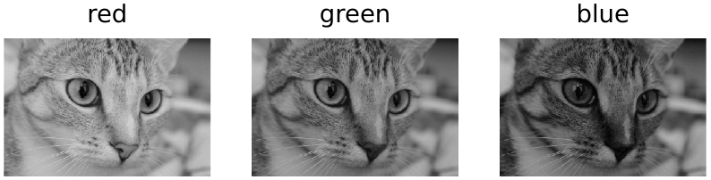
We can also edit channels. Setting the red and blue channels to zero leaves a green-only image:
only_green = cat.copy()
only_green[:, :, 0] = 0 # no red
only_green[:, :, 2] = 0 # no blue
plot(only_green)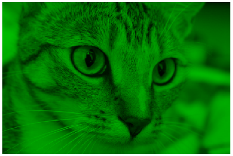
A trap: overflow
Suppose we want a brighter image, so we multiply by two. Because the pixels are uint8, any result above 255 does not stop at 255. It wraps around and starts again from zero, like a car’s odometer:
x = np.array([100, 200, 250], dtype=np.uint8)
print(x * 2) # wraps around past 255!
print(x.astype(float) * 2)[200 144 244] [200. 400. 500.]
, and . On a photograph the result is psychedelic (Figure 7.8, left). The fix is to convert to floating point, do the arithmetic, clip the result back into the range 0 to 255, and only then convert back:
wrong = cat * 2
right = np.clip(cat.astype(float) * 2, 0, 255).astype(np.uint8)
plt.figure(figsize=(4.6, 1.8))
for i, (im, name) in enumerate([(wrong, 'cat * 2'), (right, 'clipped')]):
plt.subplot(1, 2, i + 1)
plt.imshow(im)
plt.title(name)
plt.axis('off')
plt.show()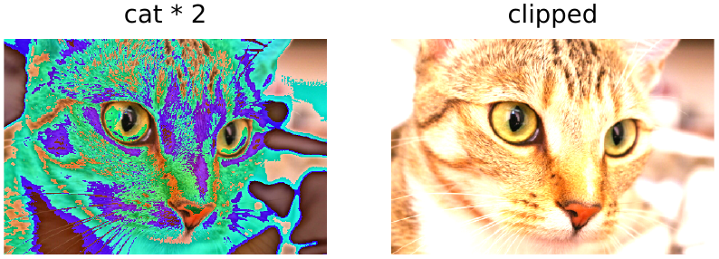
uint8 arithmetic wrapped around. Right: the same brightening done in floating point and clipped.This bug is common enough to be worth remembering. Whenever an image looks wildly, impossibly colorful after an edit, check the dtype.
Gray, small, turned and flipped
Averaging the three channels gives a grayscale image. (Our eyes are most sensitive to green, so the standard conversion weights green most heavily, roughly 0.3 red, 0.6 green and 0.1 blue, but a plain average is good enough for us.) mean returns floating-point numbers, which is what we will want from now on anyway:
gray = cat.mean(axis=2) # average the three channels
print(gray.shape, gray.dtype)(300, 451) float64
scikit-image provides the standard geometric transformations. resize changes the number of pixels, which makes the image blurrier when shrinking, and rotate turns it. A mirror image needs no library at all: the slice ::-1 walks the columns backwards.
from skimage.transform import resize, rotate
small = resize(cat, (24, 36)) # now floats between 0 and 1
turned = rotate(cat, angle=30)
mirror = cat[:, ::-1] # reverse the column order
print(small.shape, small.dtype, small.max())
versions = [(small, 'resized'), (turned, 'rotated'), (mirror, 'flipped')]
plt.figure(figsize=(4.6, 1.3))
for i, (im, name) in enumerate(versions):
plt.subplot(1, 3, i + 1)
plt.imshow(im)
plt.title(name)
plt.axis('off')
plt.show()(24, 36, 3) float64 0.8032994237411781
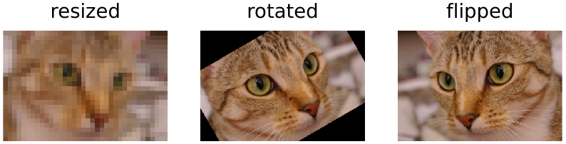
Note that resize and rotate also convert the image to floats between 0 and 1. Deep learning libraries generally prefer that range to the 0–255 of image files, and we will follow them.
Flips, small rotations and crops are more than tricks. When we train networks, showing them flipped and shifted copies of each training image is one of the cheapest ways to help them generalize. A cat facing left is still a cat. We will use exactly that idea in Chapter 16.
How many shades?
We said that 256 shades are enough. How few would do? Each pixel of an 8-bit image is a choice among shades. With 4 bits there are 16 shades, with 2 bits four, and with 1 bit just black and white. Reducing the bit depth means rounding every pixel to the nearest of fewer shades (Figure 7.10):
def reduce_bits(image, bits):
levels = 2**bits # 8 bits: 256 shades
q = np.round(image / 255 * (levels - 1)) # nearest shade, 0..levels-1
return q / (levels - 1) # back to 0..1 for drawing
plt.figure(figsize=(4.6, 1.2))
for i, bits in enumerate([8, 4, 2, 1]):
plt.subplot(1, 4, i + 1)
plt.imshow(reduce_bits(gray, bits), cmap='gray', vmin=0, vmax=1)
word = 'bit' if bits == 1 else 'bits'
plt.title(f'{bits} {word}\n{2**bits} shades')
plt.axis('off')
plt.show()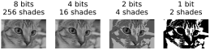
Sixteen shades are hard to tell from 256. With four, smooth gradients break into flat bands, and with two the picture becomes a stark poster. Yet a newspaper prints photographs with only black ink on white paper, using a screen of dots that are larger where the picture is darker. A computer’s version of the same idea is dithering: instead of rounding each pixel and forgetting the error, pass the error on to neighbors that have not been rounded yet. A pixel of 40 percent gray that is rounded down to black leaves a debt of 0.4, which makes its neighbors more likely to round up to white. Over any small patch, the fraction of white pixels then matches the original brightness. The Floyd–Steinberg method spreads each error to four neighbors in the proportions 7, 3, 5 and 1 sixteenths:
def dither(image):
"""Floyd-Steinberg: black or white, passing each error on."""
x = image / 255.0
out = np.zeros_like(x)
h, w = x.shape
for r in range(h):
for c in range(w):
out[r, c] = 1.0 if x[r, c] >= 0.5 else 0.0
err = x[r, c] - out[r, c]
if c + 1 < w:
x[r, c + 1] += err * 7 / 16
if r + 1 < h:
if c > 0:
x[r + 1, c - 1] += err * 3 / 16
x[r + 1, c] += err * 5 / 16
if c + 1 < w:
x[r + 1, c + 1] += err * 1 / 16
return out
d = dither(gray)
print(np.unique(d), round(d.mean(), 3), round(gray.mean() / 255, 3))
plt.figure(figsize=(4.6, 1.75))
for i, (im, name) in enumerate([(reduce_bits(gray, 1), 'rounded'),
(d, 'dithered')]):
plt.subplot(1, 2, i + 1)
plt.imshow(im, cmap='gray', vmin=0, vmax=1)
plt.title(name)
plt.axis('off')
plt.show()[0. 1.] 0.452 0.452
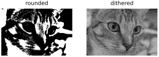
Every pixel of the dithered image is either 0 or 1, but its average brightness matches the original’s to three decimal places, and from a little distance the eye averages the dots back into grays. Dithering is a small first example of an idea we will meet again: what a picture means lives in patterns of pixels, not in any single pixel.
How many images are there?
An image is a choice of shade for every pixel, so we can count the possible images. A image in black and white has possibilities: small enough to print them all. Give each pixel 256 shades and the count is , a 22-digit number. Python’s integers can hold numbers of any size, but we only need their length. That is what the base-10 logarithm counts: , because , and a number has one more digit than its logarithm rounded down. The logarithm of a power is the power times the logarithm, so the logarithm of is , and we never have to compute the number itself:
from math import log10
for name, pixels, shades in [('3x3 black and white', 9, 2),
('3x3 gray', 9, 256),
('28x28 black and white', 784, 2),
('28x28 gray', 784, 256),
('the cat photo', 300 * 451 * 3, 256)]:
digits = int(pixels * log10(shades)) + 1
count = f'{shades}^{pixels}'
print(f'{name:22s} {count:11s} has {digits:,} digits')3x3 black and white 2^9 has 3 digits 3x3 gray 256^9 has 22 digits 28x28 black and white 2^784 has 237 digits 28x28 gray 256^784 has 1,889 digits the cat photo 256^405900 has 977,505 digits
The 28-pixel-square grayscale images of the next chapter could be any of a number with 1,889 digits. For comparison, the number of atoms in the observable universe is usually estimated to have about 80. Almost all of these images look like the ones in Figure 7.12:
rng = np.random.default_rng(0)
noise = rng.integers(0, 256, size=(4, 28, 28))
plt.figure(figsize=(4.6, 1.2))
for i in range(4):
plt.subplot(1, 4, i + 1)
plt.imshow(noise[i], cmap='gray')
plt.axis('off')
plt.show()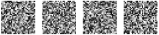
Pick an image at random and it is noise. Every handwritten digit, every face, every photograph ever taken lies in a vanishingly small corner of this space. That is good news. A classifier never has to deal with most possible images, only with the tiny, highly structured set that the world actually produces. Finding the structure of that set is what learning will mean.
Sound is an array too
Images are not the only data that are arrays. A microphone measures air pressure many thousands of times a second, and a recording is the list of measurements: a one-dimensional array. CD-quality audio takes 44,100 samples each second. A pure tone is a sine wave, and a chord is a sum of them:
from scipy.io import wavfile
rate = 44_100 # samples per second
t = np.arange(rate) / rate # one second of time
a4 = np.sin(2 * np.pi * 440 * t) # the A above middle C
print(t.shape, a4[:4])
chord = (np.sin(2 * np.pi * 440 * t) + np.sin(2 * np.pi * 554 * t)
+ np.sin(2 * np.pi * 659 * t)) / 3 # A major
wavfile.write('data/chord.wav', rate, (chord * 32767).astype(np.int16))
plt.figure(figsize=(4.6, 1.6))
plt.plot(t[:500] * 1000, a4[:500], label='A, 440 Hz')
plt.plot(t[:500] * 1000, chord[:500], label='A major chord')
plt.xlabel('milliseconds')
plt.legend(frameon=False, ncol=2, loc='lower center',
bbox_to_anchor=(0.5, 1.0))
plt.show()(44100,) [0. 0.06264832 0.12505052 0.18696144]
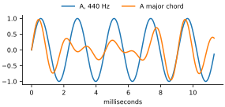
A tone of 440 hertz (Hz) vibrates 440 times a second. Since a sine wave completes one cycle each time its input grows by , the tone at time t seconds is np.sin(2 * np.pi * 440 * t). wavfile.write saves the array as a sound file you can play. Sound files usually store each sample as a 16-bit whole number (np.int16), from to , so we stretch the wave from the range to 1 to fill it. The same array tools apply: adding arrays mixes sounds, multiplying by a number changes the volume, and a slice cuts out a moment, just as a slice cropped the cat.
So far we have been looking at one image at a time. In the next chapter we load sixty thousand of them, and let them become the data a machine learns from.